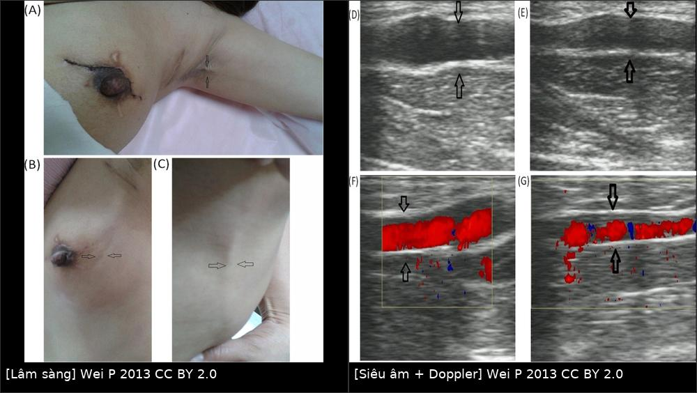
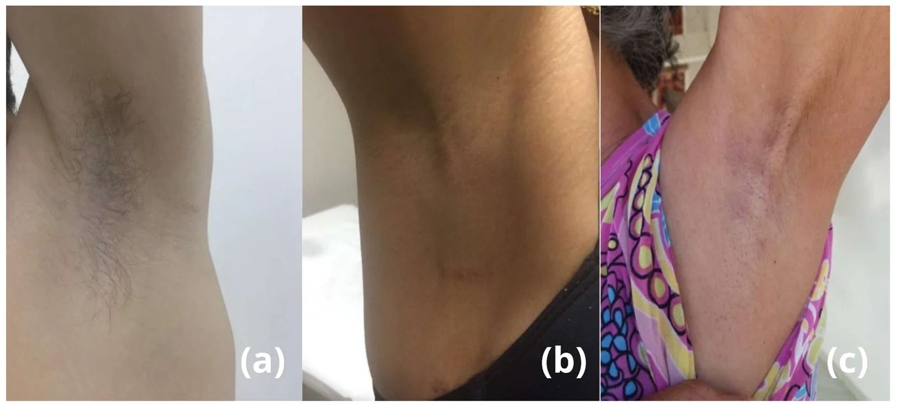
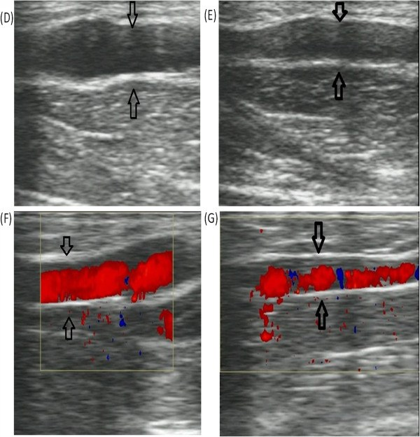

599 — Hội chứng dây nách (axillary web syndrome) & phù bạch mạch sau mổ nách: nhận diện dây, siêu âm loại trừ & xử trí / Axillary web syndrome
Tags: pattern:day-xo pattern:phu-bach-mach pattern:day-da vung:chi-tren vung:vu score:ISL score:MDACC-ICG protocol:sieu-am protocol:MRI protocol:lymphoscintigraphy
Mức chắc chắn (certainty): tổng hợp y văn (literature synthesis) — nhóm tự biên từ y văn mở (Europe PMC/PMC: J Clin Med 2026, Breast Cancer (Dove) 2019, Ann Rehabil Med 2021, Lymphat Res Biol 2022, World J Surg Oncol 2013). Có một ca nguyên văn (PMC3598739) dùng làm phản biện về cơ chế. Ảnh CC BY 2.0/4.0.
1. Tổng quan — dây nách hình thành thế nào và vì sao hình ảnh "mờ nhạt"
- Định nghĩa: hội chứng dây nách (axillary web syndrome — AWS, còn gọi cording, lymphatic cording) là tình trạng dây/dải xơ dưới da (subcutaneous cord) nổi từ nách chạy dọc mặt trong cánh tay (có khi tới khuỷu, thành ngực, bụng trên), xuất hiện sau mổ nách ± xạ vùng hạch, gây đau khi giạng vai và hạn chế tầm vận động (ROM).
- Tần suất — ngưỡng định lượng bắt buộc:
- Báo cáo rộng 6–86% sau mổ ung thư vú; khác biệt do thiết kế nghiên cứu, thời điểm khám và thiếu tiêu chuẩn chẩn đoán thống nhất (PMC6304256; PMC13566857).
- Theo loại mổ: cắt hạch nách (ALND) 36–72% vs sinh thiết hạch gác (SLNB) 11–58% (PMC6304256).
- Nghiên cứu Hàn Quốc 189 bệnh nhân: 30,6%; hóa trị OR 2,84 (95% CI 1,46–5,53), tăng huyết áp OR 2,72 (1,18–6,30) (PMC8572992).
- Theo dõi chủ động: 90,9% tích lũy trong 180 ngày, trong đó 66,1% dây được phát hiện ngay ngày hậu phẫu thứ 7 — nghĩa là khám sớm mới thấy, chờ bệnh nhân tự than mới khám là bỏ sót (PMC13566857).
- Nhóm cắt tuyến đối bên dự phòng có tần suất cao nhất tới 86% (PMC6304256).
- Thời điểm: thường 2–8 tuần sau mổ; vẫn có thể xuất hiện/tái phát nhiều tháng đến nhiều năm sau mổ (PMC6304256). AWS cũng gặp không do ung thư: vận động tay lặp lại (thể thao, nghề nghiệp) (PMC13566857).
- TẠI SAO hình ảnh trông như vậy (vật lý + mô bệnh):
- Dây = xơ hóa mô liên kết dưới da + rối loạn bạch mạch nông ± huyết khối tĩnh mạch nông. Trên siêu âm, collagen/xơ cho hồi âm cao, mất mặt phẳng mô mỡ; dịch bạch mạch ứ cho vùng giảm hồi âm quanh dây → dây hiện như cấu trúc ống giảm hồi âm (PMC3598739 mô tả "echo of a tube structure").
- Doppler màu: nếu dây là tĩnh mạch nông huyết khối → không có dòng; nếu là tĩnh mạch giãn còn thông → có dòng (ca PMC3598739 thấy dòng trong lòng ống, tác giả kết luận dây là mạch máu). Vì vậy màu trong dây không đồng nghĩa AWS.
- MRI: xơ/collagen T1 trung gian, T2 thấp; phù/dịch quanh dây T2 cao. MRI độ phân giải cao (≥ 3 T, FOV nhỏ, bề dày ≤ 2 mm) đủ thấy tĩnh mạch nông huyết khối — đây là mục tiêu loại trừ, không phải "chẩn đoán AWS".
- Điểm cốt lõi (phản biện nguồn): tổng quan 2019 kết luận AWS không có cấu trúc giải phẫu nhất quán trên siêu âm → siêu âm không xác nhận AWS, chỉ loại trừ huyết khối tĩnh mạch nông/Mondor (PMC6304256). Tổng quan 2026 đồng tình: siêu âm là công cụ bổ trợ loại trừ (PMC13566857). Ca 2013 lại chứng minh dây có dòng máu — nhắc rằng cơ chế là lympho–mạch (lymphovascular), không thuần bạch mạch.
2. Mẫu hình (pattern) + chẩn đoán phân biệt theo bối cảnh (Gamut)
- Khuôn 1 — Dây đơn độc/đa dây, đau khi giạng vai, sau mổ nách 2–8 tuần. Gamut: AWS vs huyết khối tĩnh mạch nông (Mondor) vs xơ hóa sau mổ. Chốt: dây nổi khi giạng vai, không đỏ nóng, không sốt, xuất hiện đúng cửa sổ 2–8 tuần → AWS.
- Khuôn 2 — Dây + đỏ, nóng, đau lan, sốt. Gamut: viêm mô tế bào/erysipelas vs viêm mạch bạch huyết (lymphangitis) vs AWS bội nhiễm. Chốt: sốt + đỏ lan nhanh + CRP/bạch cầu tăng → nhiễm trùng; siêu âm tìm ổ áp-xe.
- Khuôn 3 — Dây ở thành ngực/vú, đau, không tiền sử mổ nách. Gamut: bệnh Mondor (viêm tắc tĩnh mạch nông thành ngực) vs AWS không do ung thư vs viêm mô tế bào. Chốt: siêu âm: cấu trúc ống không xẹp, huyết khối trong lòng, không dòng → Mondor.
- Khuôn 4 — Dây + phù chi. Gamut: AWS + phù bạch mạch liên quan ung thư vú (BCRL) vs huyết khối tĩnh mạch sâu vs phù hệ thống. Chốt: phù một chi cùng bên, chu vi ≥ 2 cm/thể tích ≥ 10%, L-Dex > 10 → BCRL (bài 593).
- Khuôn 5 — Dây + khối/hạch mới ở nách, đau kiểu thần kinh. Gamut: tái phát hạch/xâm lấn đám rối vs AWS vs xơ xạ. Chốt: hạch mất rốn mỡ, vỏ dày, ngấm/DWI sáng, PET dương → tái phát; không khối → nghiêng AWS.
- Khuôn 6 — Dây + hạn chế vận động kéo dài, không đau nhiều. Gamut: viêm dính bao khớp (adhesive capsulitis) vs xơ hóa sau xạ vs AWS mạn. Chốt: mất vận động cả chủ động và thụ động, ổ chảo–cánh tay → adhesive capsulitis; AWS chủ động hạn chế do đau, thụ động gần bình thường.
- Gợi nhớ "CORD": Cellulitis/lymphangitis, Occlusion (superficial vein thrombosis — Mondor), Recurrence (hạch tái phát), Disorder of lymphatics (AWS/BCRL).
3. Bảng so sánh phân biệt (ma trận đối chiếu)
| Thực thể (entity) | Hình ảnh điển hình | Chốt vào (rule-in) | Chốt loại (rule-out) | Gợi ý xác nhận |
|---|---|---|---|---|
| AWS | Siêu âm: dây giảm hồi âm dạng ống dưới da, không có cấu trúc mạch nhất quán; Doppler thường không dòng; MRI: dải T2 cao mỏng, không khối | Dây nổi khi giạng vai + đúng cửa sổ 2–8 tuần sau mổ nách + không đỏ nóng/sốt | Có huyết khối trong tĩnh mạch nông → không phải AWS đơn thuần; có khối hạch → nghĩ tái phát | Lâm sàng là chính; siêu âm loại trừ |
| Mondor (viêm tắc tĩnh mạch nông) | Siêu âm: tĩnh mạch không xẹp khi ép, huyết khối hồi âm trong lòng, không dòng; thành ngực/vú | Cấu trúc ống không xẹp + huyết khối trong lòng + không dòng Doppler | Cấu trúc xẹp khi ép, không thấy lòng mạch → không Mondor | Siêu âm tuyến vú/thành ngực, Doppler |
| BCRL (phù bạch mạch) | Da dày, mô dưới da dày tăng hồi âm, cobblestone; MRI honeycomb, dày da; LS: dermal backflow | Phù một chi cùng bên + chu vi ≥ 2 cm hoặc thể tích ≥ 10% + L-Dex > 10 | Không phù, chỉ dây → chưa BCRL | Đo chu vi 4 điểm/thể tích; BIS; ICG/lymphoscintigraphy |
| Viêm mô tế bào / lymphangitis | Dày da khu trú, tăng tưới máu, có thể ổ áp-xe; không theo trục bạch mạch | Sốt + đỏ nóng lan nhanh + đáp ứng kháng sinh | Không sốt, mạn tính, đối xứng theo trục dây → không nhiễm trùng | CRP/BC; siêu âm loại áp-xe/huyết khối |
| Tái phát hạch nách | Hạch mất rốn mỡ, vỏ dày, xâm lấn; MRI ngấm, DWI sáng; PET dương | Khối/hạch mới + PET dương + đau thần kinh | Không khối, mô mềm đồng nhất → nghiêng AWS | Siêu âm + FNA/core; MRI/PET-CT |
| Xơ hóa sau xạ | Da dày đều trong trường chiếu, mô xơ không ngấm, không khối; teo cơ | Thay đổi đối xứng theo trường xạ + không khối | Khối/ngấm/DWI sáng → không phải xơ đơn thuần | MRI; so phim cũ |
| Adhesive capsulitis | Không tổn thương mô mềm đặc hiệu; MRI có thể dày bao khớp, co rút bao | Hạn chế cả vận động thụ động, ổ chảo–cánh tay | Thụ động gần bình thường, dây nổi rõ → AWS | Khám lâm sàng; MRI khớp vai nếu cần |

Trái: dây căng từ nách xuống mặt trong cánh tay, bệnh nhân không giạng vai hết (mũi tên); (B, C) dây lan tới góc trên ngoài vú và thành ngực–bụng. Phải: siêu âm B-mode (D, E) thấy cấu trúc dạng ống giảm hồi âm; Doppler màu (F, G) có dòng trong lòng ống — trong ca này tác giả kết luận dây là mạch máu, không phải tổ chức xơ thuần. Ảnh ghép letterbox, CC BY 2.0 (Wei P et al., World J Surg Oncol 2013, PMC3598739).Đọc siêu âm đúng cách — "loại trừ, không xác nhận"
- Kỹ thuật: đầu dò linear 12–18 MHz (tổng quan 2019 khuyến cáo ≥ 15 MHz, tổng quan 2026 dùng 12 MHz), bệnh nhân giạng vai 90° để dây căng; quét từ nách dọc mặt trong cánh tay tới khuỷu, so sánh hai bên.
- Mô tả: số dây, chiều dài, đường kính dây (mm), hồi âm, có/không cấu trúc ống có lòng, xẹp khi ép, có/không dòng Doppler. Hiện chưa có ngưỡng đường kính được chuẩn hóa cho AWS → ghi số đo để theo dõi, không dùng để chốt.
- Kết luận đúng: thấy tĩnh mạch nông không xẹp + huyết khối + không dòng → Mondor, không gọi AWS; không thấy bất thường mạch + lâm sàng điển hình → AWS (siêu âm âm tính ủng hộ, không loại trừ).
4. Protocol chụp – theo dõi – xử trí + lưu đồ
- Khám lâm sàng (chuẩn vàng): quan sát + sờ khi vai giạng; đo ROM (giạng, gập, xoay trong); ghi số dây, vị trí, mức đau VAS; khám hai bên và thành ngực.
- Siêu âm (khi cần loại trừ): linear 12–18 MHz, quét theo trục dây, Doppler màu + ép; mục tiêu là tìm huyết khối tĩnh mạch nông/khối hạch, không phải "chụp dây".
- MRI (chọn lọc): 3 T, FOV nhỏ, T1 + T2 fat-sat ± DWI, khi siêu âm không kết luận hoặc nghi tái phát/xơ xạ; tìm dải T2 cao, huyết khối trong tĩnh mạch, khối ngấm.
- Lymphoscintigraphy ⁹⁹ᵐTc-nanocolloid (nghiên cứu/chọn mổ): 46 bệnh nhân AWS — 67,3% có tuần hoàn bàng hệ và/hoặc dermal backflow, 15,2% chỉ suy chức năng, 8,6% tắc bạch mạch không bàng hệ, 8,6% bình thường; trong 5 người chỉ suy chức năng lần 1, 4 người tiến triển sang bàng hệ/dermal backflow ở lần 2 → AWS có thể tiến triển (PMC9422805).
- Phân độ: không có thang riêng cho AWS. Dùng ISL cho phù kèm theo (0 dưới lâm sàng, I giảm khi nâng tay, II không giảm, IIb không lõm, III voi phù) và MDACC ICG 0–V khi đánh giá chức năng bạch mạch; ghi rõ đang dùng thang nào.
- Xử trí (chủ yếu bảo tồn):
- Vật lý trị liệu: kéo giãn nhẹ, mobilization vai tiến triển, manual therapy, giáo dục; đa số giảm trong vài tuần (ca PMC3598739 hồi phục 3 tuần; loạt 2026 hồi phục 2 tuần).
- Giảm đau: NSAIDs/paracetamol; không bắt buộc kháng đông trừ khi siêu âm chứng minh huyết khối tĩnh mạch nông.
- Tiếp tục vận động — nghỉ tuyệt đối làm cứng vai; tránh kéo giãn quá mạnh gây đau.
- Theo dõi phù: đo chu vi/thể tích mỗi 3–6 tháng trong 2–3 năm đầu; L-Dex > 10 hoặc chu vi ≥ 2 cm → vào quy trình BCRL (bài 593).
- Khi nào nghi tái phát thay vì AWS: dây mới kèm khối/hạch, đau thần kinh, phù tăng nhanh, nốt da → siêu âm + MRI/PET-CT + sinh thiết; AWS đơn thuần không liên quan tái phát ung thư (PMC6304256).
flowchart TD
A[Đau nách + dây nổi khi giạng vai sau mổ nách] --> B{Đỏ nóng sốt HOẶC đau cấp?}
B -->|Có| C[Siêu âm + CRP/BC: loại áp-xe, huyết khối, viêm mô tế bào]
B -->|Không| D[Siêu âm 12-18 MHz + Doppler + ép: tìm tĩnh mạch nông huyết khối]
D --> E{Có cấu trúc ống không xẹp + huyết khối?}
E -->|Có| F[Mondor: siêu âm theo dõi, kháng đông chọn lọc]
E -->|Không| G[Chẩn đoán AWS trên lâm sàng]
G --> H{Phù chi kèm theo?}
H -->|Có| I[Đo chu vi 4 điểm + thể tích hoặc BIS/L-Dex]
H -->|Không| J[Vật lý trị liệu: kéo giãn + mobilization + giảm đau]
I --> K{Chu vi >= 2 cm HOẶC thể tích >= 10% HOẶC L-Dex > 10?}
K -->|Có| L[Quy trình BCRL: CDT + áo ép, ICG nếu chọn mổ]
K -->|Không| J
J --> M{Tái phát nhiều lần HOẶC khối/hạch mới HOẶC đau thần kinh?}
M -->|Có| N[Siêu âm/MRI/PET + sinh thiết: loại tái phát]
M -->|Không| J
5. Biến thể bình thường và cạm bẫy
- Cạm bẫy "siêu âm phải thấy dây mới là AWS": AWS không có cấu trúc nhất quán trên siêu âm; siêu âm âm tính là bình thường trong AWS (PMC6304256; PMC13566857).
- Cạm bẫy "có màu trong dây = AWS": màu trong lòng ống chứng minh có mạch, tức là tĩnh mạch nông — hướng tới Mondor/huyết khối, không phải bằng chứng AWS (ca PMC3598739).
- Cạm bẫy "dây = tái phát ung thư": AWS không liên quan tái phát; nhưng khối/hạch mới thì phải loại tái phát — đừng gộp hai bệnh cảnh.
- Cạm bẫy "đau vai sau mổ = dính bao khớp": AWS hạn chế chủ động do đau, thụ động gần bình thường; adhesive capsulitis hạn chế cả thụ động.
- Cạm bẫy bỏ sót phù: AWS và BCRL thường đi cùng; không đo chu vi/BIS là bỏ giai đoạn 0–I của BCRL.
- Cạm bẫy "AWS chỉ sau ung thư": gặp ở nam giới, vận động tay lặp lại, nghề nghiệp — không có tiền sử ung thư vẫn phải nghĩ AWS (PMC13566857).
- Cạm bẫy "nghỉ ngơi cho hết đau": bất động làm co rút vai; điều trị đúng là vận động có kiểm soát.
- Cạm bẫy tái phát: AWS tái phát nhiều tháng–năm sau mổ; tái phát không đồng nghĩa thất bại điều trị hay bệnh nặng lên.
6. Tự lượng giá — Blind Quiz
Ca 1 — Nữ 54 tuổi, 5 tuần sau cắt tuyến + ALND trái, đau nách khi giạng tay. Nhìn ảnh, mô tả trước khi mở đáp án.
- Gợi ý lâm sàng: đau tăng khi giạng vai, không sốt, không đỏ.
- Câu hỏi: Dấu hiệu chính? Hai chẩn đoán phân biệt cần loại trừ? Siêu âm dùng để làm gì trong bệnh cảnh này?
Bấm để hiện đáp án (findings + chẩn đoán)
- Findings: dây căng dưới da từ nách xuống mặt trong cánh tay, nổi rõ khi giạng vai, giới hạn giạng; các dây lan tới góc trên ngoài vú và thành ngực–bụng. Siêu âm: cấu trúc dạng ống giảm hồi âm; Doppler màu có dòng trong lòng ống.
- Chẩn đoán: hội chứng dây nách (AWS) — điển hình về vị trí và thời điểm (2–8 tuần sau ALND). Phân biệt: Mondor (huyết khối tĩnh mạch nông) và viêm mô tế bào.
- Vai trò siêu âm: loại trừ huyết khối tĩnh mạch nông/khối hạch; không xác nhận AWS. Trong ca này dòng trong ống là mạch máu, cho thấy dây có thành phần lympho–mạch, không thuần xơ.
- Xử trí: kéo giãn + mobilization vai tiến triển + giảm đau; đo chu vi/thể tích theo dõi phù.
- Nguồn ảnh: Wei P et al., World J Surg Oncol 2013, Fig. 1–2, CC BY 2.0 (ảnh ghép letterbox).
Ca 2 — Nam 34 tuổi, không tiền sử ung thư, đau nách sau chơi squash nhiều giờ. Ảnh lâm sàng 3 bệnh nhân (a–c).

- Gợi ý: (a) nam, vận động mạnh; (b) sau mổ ung thư vú; (c) vận động nghề nghiệp lặp lại.
- Câu hỏi: Dây nách có chỉ gặp sau ung thư không? Cần hỏi gì để phân biệt nguyên nhân?
Bấm để hiện đáp án (findings + chẩn đoán)
- Findings: cả ba đều có dây dưới da nách/mặt trong cánh tay, đau và hạn chế giạng vai; không có khối, không sốt.
- Chẩn đoán: AWS ở cả ba bối cảnh — (a) không do ung thư (vận động mạnh), (b) sau mổ ung thư vú, (c) nghề nghiệp lặp lại. Đây là điểm mới của tổng quan 2026: AWS không chỉ của bệnh nhân ung thư.
- Cần hỏi: tiền sử mổ nách/xạ, hoạt động lặp lại, khởi phát – thời gian, sốt/đỏ, khối mới; khám hai bên.
- Nguồn ảnh: Cardoso Oliveira N et al., J Clin Med 2026, Fig. 1, CC BY 4.0.
Ca 3 — Nữ 61 tuổi, 3 năm sau mổ + xạ, phù tay phải tăng dần, nay thấy dây cứng ở nách. Chọn bước tiếp theo.

- Câu hỏi: Kết luận nào không được phép rút ra từ ảnh? Cần đo gì để phân tầng?
Bấm để hiện đáp án (findings + chẩn đoán)
- Findings: cấu trúc dạng ống dưới da, thành rõ; Doppler màu có dòng trong lòng ống (D–G).
- Điều KHÔNG được kết luận: "có dòng nên chắc chắn là AWS" — ngược lại, dòng chứng minh có mạch, phải loại Mondor/tĩnh mạch giãn; AWS được chẩn đoán bằng lâm sàng sau khi loại trừ.
- Phân tầng: phù 3 năm + dây cứng → đo chu vi 4 điểm/thể tích, BIS (L-Dex > 10), siêu âm mô mềm (dày da, cobblestone), cân nhắc ICG/lymphoscintigraphy nếu xét can thiệp; khối/nốt mới phải sinh thiết.
- Nguồn ảnh: Wei P et al., World J Surg Oncol 2013, Fig. 2, CC BY 2.0 (giữ nguyên bản).
Bài liên quan chéo
- 593 – Phù bạch mạch chi trên sau điều trị ung thư vú (BCRL)
- 522 – Theo dõi sau điều trị ung thư vú
- 589 – Sinh thiết hạch gác & cắt hạch nách có định hướng
- 598 – Xạ trị vùng hạch sau ung thư vú
- 516 – Hình ảnh vú sau điều trị: tái tạo, hoại tử mỡ, sẹo vs tái phát
- 523 – Sarcoma mạch do xạ ở vú (RAAS)
Ảnh
images/composite_day-nach.jpg,images/599_day-nach_Clinical_PMC3598739.jpg,images/599_day-nach_US_PMC3598739.jpg,images/599_day-nach_Clinical_PMC13566857.jpg. Nguồn + giấy phép từng ảnh trongimages/CREDITS.md.
Không dùng để chẩn đoán độc lập khi chưa có người hướng dẫn.